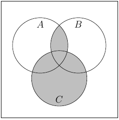
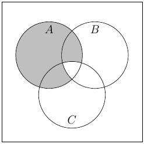
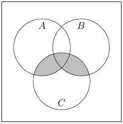
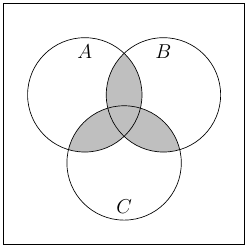
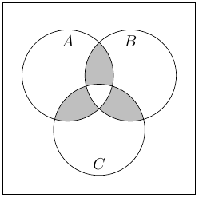
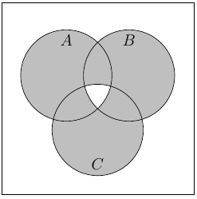
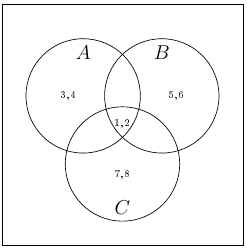
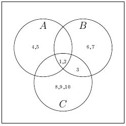

Section6.1Introduction
-
Exercise 1.1.11 There are three given sets \(A=\halmaz{3,4,6,7,8},B=\halmaz{2,4,5,6,8}\) and \(C=\halmaz{1,2,4,5,8}\text{.}\) We have that
\begin{align*} A\setminus B\amp =\halmaz{3,7}\\ C\cap B\amp =\halmaz{2,4,5,8}\text{.} \end{align*}Thus
\begin{equation*} (A\setminus B)\cup(C\cap B)=\halmaz{2,3,4,5,7,8}\text{.} \end{equation*} -
Exercise 1.1.12 We have three sets \(A=\halmaz{1,3,4,6,7},B=\halmaz{2,4,5,6,8}\) and \(C=\halmaz{1,3,4,5,8}\text{.}\)
\begin{align*} (A\cap B)\amp =\halmaz{4,6}\\ (C\cap B)\amp =\halmaz{4,5,8}\text{.} \end{align*}Therefore
\begin{equation*} (A\cap B)\setminus(C\cap B)=\halmaz{6}\text{.} \end{equation*} -
Exercise 1.1.13 Now the three given sets are \(A=\halmaz{1,3,4,6,7},B=\halmaz{2,4,6,8}\) and \(C=\halmaz{1,3,4,8}\text{.}\)
\begin{align*} (A\setminus B)\amp =\halmaz{1,3,7}\\ (C\setminus B)\amp =\halmaz{1,3}\text{.} \end{align*}So we obtain
\begin{equation*} (A\setminus B)\cup(C\setminus B)=\halmaz{1,3,7}\text{.} \end{equation*} Exercise 1.1.14 (a) The elements of the set are 7, 10 and 13. (b) The elements of the set are 0, 1 and 4. (c) The possible differences are \(3-1, 3-2, 4-1, 4-2, 5-1\) and \(5-2\text{,}\) thus the elements of the set are 1, 2, 3 and 4.
Exercise 1.1.15 (a) \(\halmazvonal{2k}{ k\in\halmaz{1,2,3,4,5}}\text{,}\) (b) \(\halmazvonal{k^2}{k\in\halmaz{1,2,3,4,5}}\text{,}\) (c) \(\halmazvonal{2^{-k}}{ k\in\mathbb{N}\cup\halmaz{0}}\text{,}\) (d) \(\halmazvonal{a/b }{a,b\in\mathbb{N}, b\leq a\leq 2b}\text{.}\)
Exercise 1.1.16 (a)  (b)  (c)  (d)  (e)  (f) 
-
Exercise 1.1.17 The set \(A\cap B\cap C\) is a subset of all other sets for which we have certain cardinality conditions, so we may set
\begin{equation*} A\cap B\cap C=\halmaz{1,2}\text{.} \end{equation*}The conditions for \(|A\cap B|, |A\cap C|\) and \(|B\cap C|\) are satisfied. We have that \(|A|=4\text{,}\) that means that two elements are missing from \(A\setminus(B\cup C)\text{.}\) We let \(A\setminus(B\cup C)=\halmaz{3,4}\text{.}\) Similarly for \(B\setminus(A\cup C)\) and \(C\setminus(A\cup B)\text{.}\) We obtain that 
Exercise 1.1.18 Following the solution of Exercise 1.1.17 we get: 
Exercise 1.2.1 (a) \(\sum_{i=4}^7 i=4+5+6+7\text{,}\) (b) \(\sum_{i=1}^5 (i^2-i)=0+2+6+12+20\text{,}\) (c) \(\sum_{i=1}^4 10^i=10+100+1000+10000\text{,}\) (d) \(\sum_{2\leq i\leq 5} \frac{1}{2^i}=\frac{1}{4}+\frac{1}{8}+\frac{1}{16}+\frac{1}{32}\text{,}\) (e) \(\sum_{i\in S} (-1)^i\text{,}\) where \(S=\halmaz{2,3,5,8}\) is \(1+(-1)+(-1)+1\text{.}\)
Exercise 1.2.2 (a) \(2+4+6+8+10=\sum_{i=1}^5 2i\text{,}\) (b) \(1+4+7+10=\sum_{i=0}^3 (3i+1)\text{,}\) (c) \(\frac{1}{4}+\frac{1}{2}+1+2+4=\sum_{i=-2}^2 2^i\text{,}\) (d) \(\frac{1}{4}-\frac{1}{2}+1-2+4=\sum_{i=-2}^2 (-2)^i\text{.}\)
Exercise 1.2.3 (a) \(\prod_{i=-4}^{-1} i=(-4)\cdot(-3)\cdot(-2)\cdot(-1)\text{,}\) (b) \(\prod_{i=1}^4 (i^2)=1\cdot 4\cdot 9\cdot 16\text{,}\) (c) \(\prod_{i=1}^3 2^i=2\cdot 4\cdot 8\text{,}\) (d) \(\prod_{-2\leq i\leq 3} \frac{1}{2^i}=4\cdot 2\cdot 1\cdot \frac{1}{2}\cdot \frac{1}{4}\cdot \frac{1}{8}\text{,}\) (e) \(\prod_{i\in S} (-1)^i\text{,}\) where \(S=\halmaz{2,4,6,7}\) is \((-1)^2\cdot(-1)^4\cdot(-1)^6\cdot(-1)^7\text{.}\)
Exercise 1.2.4 (a) \(1\cdot 3\cdot 5\cdot 7=\prod_{i=0}^3 (2i+1)\text{,}\) (b) \((-1)\cdot 2\cdot 5\cdot 8=\prod_{i=0}^3 (3i-1)\text{,}\) (c) \(\frac{1}{9}\cdot\frac{1}{3}\cdot 1\cdot 3\cdot 9=\prod_{i=-2}^2 3^{i}\text{.}\)
-
Exercise 1.2.5 The values are
\begin{align*} 0! \amp = 1,\\ 1! \amp = 1,\\ 2! \amp = 2,\\ 3! \amp = 6,\\ 4! \amp = 24,\\ 5! \amp = 120,\\ 6! \amp = 720,\\ 7! \amp = 5~040,\\ 8! \amp = 40~320\text{.} \end{align*} -
Exercise 1.2.6 The values are
\begin{align*} 5+3! \amp = 5+6 = 11,\\ (5+3)! = 8! \amp = 40~320,\\ 4-2\cdot 3! \amp = 4-2\cdot 6 = 4-12=-8,\\ (4-2)\cdot 3! \amp = (4-2) \cdot 6 = 2 \cdot 6 = 12,\\ 4 - (2 \cdot 3)! \amp = 4 - 6! = 4 - 720 = -716,\\ 3 \cdot 2! \amp = 3 \cdot 2 = 6,\\ (3 \cdot 2)! \amp = 6! = 720,\\ 4 \cdot 3! \amp = 4 \cdot 6 = 24,\\ 4! \cdot 5 \amp = 24 \cdot 5 = 120\text{.} \end{align*} -
Exercise 1.2.7 Let
\begin{equation*} S_n = \halmazvonal{k}{k \text{ is a positive integer } , k\leq n} = \halmaz{1, 2, \dots , n}\text{.} \end{equation*}Then it is easy to see that \(S_n = S_{n-1} \cup \halmaz{n}\text{,}\) that is, \(S_n\) is the disjoint union of \(S_{n-1}\) and \(\halmaz{n}\text{.}\) Then by the definition of the factorial, we have
\begin{equation*} n! = \prod_{k \in S_n} k = \left( \prod_{k \in \halmaz{n}} k \right) \cdot \left( \prod_{k \in S_{n-1}} k \right) = n \cdot (n-1)!\text{.} \end{equation*}If \(n \geq 2\text{,}\) then another proof could be
\begin{equation*} n! = n \cdot \underbrace{(n-1) \cdot (n-2) \cdot \dots \cdot 2 \cdot 1 }_{(n-1)!}= n \cdot (n-1)!\text{.} \end{equation*}Nevertheless, the claim is true for \(n=1\text{,}\) as well:
\begin{equation*} 1! = 1 = 1 \cdot 1 = 1 \cdot 0!\text{.} \end{equation*} -
Exercise 1.3.5 (a) We obtain that
\begin{align*} 678 \amp = 1\cdot 567+111\\ 567 \amp = 5\cdot 111+12\\ 111 \amp = 9\cdot 12+3\\ 12 \amp = 4\cdot 3+0\text{.} \end{align*}Thus \(\gcd(678,567)=3\text{.}\) We work backwards to compute \(x\) and \(y:\)
\begin{align*} 3\amp =111-9\cdot 12\\ \amp =111-9\cdot (567-5\cdot 111)=-9\cdot 567+46\cdot 111\\ \amp =-9\cdot 567+46 \cdot (678-567)=46\cdot 678-55\cdot 567\text{.} \end{align*}Hence we have
\begin{equation*} 46\cdot 678-55\cdot 567=\gcd(678,567)=3\text{.} \end{equation*}(b) We get that
\begin{align*} 803 \amp = 2\cdot 319+165\\ 319 \amp = 1\cdot 165+154\\ 165 \amp = 1\cdot 154+11\\ 154 \amp = 14\cdot 11+0\text{.} \end{align*}It follows that \(\gcd(803,319)=11\text{.}\) Now we find \(x\) and \(y:\)
\begin{align*} 11\amp = 165-154\\ \amp = 165-(319-165)=-319+2\cdot 165\\ \amp = -319+2 \cdot (803-2\cdot 319)=2\cdot 803-5\cdot 319\text{.} \end{align*}So we get the equation
\begin{equation*} 2\cdot 803-5\cdot 319=\gcd(803,319)=11\text{.} \end{equation*}(c) In this case the computations go as follows
\begin{align*} 2701 \amp = 1\cdot 2257+444\\ 2257 \amp = 5\cdot 444+37\\ 444 \amp = 12\cdot 37+0\text{.} \end{align*}Therefore \(\gcd(2701,2257)=37\text{.}\) We determine \(x\) and \(y:\)
\begin{align*} 37\amp = 2257-5\cdot 444\\ \amp = 2257-5(2701-2257)=-5\cdot 2701+6\cdot 2257\text{.} \end{align*}We have that
\begin{equation*} -5\cdot 2701+6\cdot 2257=\gcd(2701,2257)=37\text{.} \end{equation*}(d) The summary of the computations:
\begin{align*} 3397 \amp = 1\cdot 1849+1548\\ 1849 \amp = 1\cdot 1548+301\\ 1548 \amp = 5\cdot 301+43\\ 301 \amp = 7\cdot 43+0\text{.} \end{align*}That is, \(\gcd(3397,1849)=43\text{.}\) It remains to compute \(x\) and \(y:\)
\begin{align*} 43\amp =1548-5\cdot 301\\ \amp =1548-5(1849-1548)=-5\cdot 1849+6\cdot 1548\\ \amp = -5\cdot 1849+6(3397-1849)=6\cdot 3397-11\cdot 1849\text{.} \end{align*}Thus we obtain the equation
\begin{equation*} 6\cdot 3397-11\cdot 1849=\gcd(3397,1849)=43\text{.} \end{equation*} -
Exercise 1.4.1 Write 21 in base 2 first. Now, 16 is the highest 2-power not greater than 21, \(21 = 1 \cdot 16 +5\text{,}\) and we continue with the remainder 5. Now, 4 is the highest 2-power not greater than 5, \(5 = 1\cdot 4 + 1\text{,}\) and we continue with the remainder 1. Finally, 1 is the highest 2-power not greater than 1, \(1 = 1 \cdot 1 + 0\text{.}\) Thus
\begin{equation*} 21_{10} = 1 \cdot 16 + 1 \cdot 4 + 1\cdot 1 = 1 \cdot 2^4 + 1 \cdot 2^2 + 1 \cdot 2^0 = 10101_2\text{.} \end{equation*}Now, write 50 in base 3. Here, 27 is the highest 3-power not greater than 50, \(50 = 1 \cdot 27 + 23\text{,}\) and we continue with the remainder 23. Now, 9 is the highest 3-power not greater than 23, \(23 = 2\cdot 9 + 5\text{,}\) and we continue with the remainder 5. Now, 3 is the highest 3-power not greater than 5, \(5 = 1\cdot 3 + 2\text{,}\) and we continue with the remainder 2. Finally, 1 is the highest 3-power not greater than 2, \(2 = 2 \cdot 1 + 0\text{.}\) Thus
\begin{equation*} 50_{10} = 1 \cdot 27 + 2 \cdot 9 + 1 \cdot 3 + 2\cdot 1 = 1 \cdot 3^3 + 2 \cdot 3^2 + 1 \cdot 3^1 + 2 \cdot 3^0 = 1212_3\text{.} \end{equation*}Finally, write 2814 in base 16. Now, 256 is the highest 16-power not greater than 2814 (the next 16-power is 4096), \(2814 = 10 \cdot 256 + 254\text{,}\) and we continue with the remainder 254. Now, 16 is the highest 16-power not greater than 254, \(254 = 15\cdot 16 + 14\text{,}\) and we continue with the remainder 14. Finally, 1 is the highest 16-power not greater than 14, \(14 = 14 \cdot 1 + 0\text{.}\) Thus
\begin{equation*} 2814_{10} = 10 \cdot 256 + 15 \cdot 16 + 14 \cdot 1 = 10 \cdot 16^2 + 15 \cdot 16^1 + 14 \cdot 16^0 = AFE_{16}\text{.} \end{equation*} -
Exercise 1.4.2 Rewrite \(21_{10}\) into base 2 first.
\begin{align*} 21 \amp = 10 \cdot 2 + 1,\\ 10 \amp = 5 \cdot 2 + 0,\\ 5 \amp = 2 \cdot 2 + 1,\\ 2 \amp = 1 \cdot 2 + 0,\\ 1 \amp = 0 \cdot 2 + 1\text{.} \end{align*}The remainders backwards are 1, 0, 1, 0, 1, thus
\begin{equation*} 21_{10} = 10101_{2}\text{.} \end{equation*}Now, rewrite \(50_{10}\) into base 3.
\begin{align*} 50 \amp = 16 \cdot 3 + 2,\\ 16 \amp = 5 \cdot 3 + 1,\\ 5 \amp = 1 \cdot 3 + 2,\\ 1 \amp = 0 \cdot 3 + 1\text{.} \end{align*}The remainders backwards are 1, 2, 1, 2, thus
\begin{equation*} 50_{10} = 1212_{3}\text{.} \end{equation*}Finally, rewrite \(250_{10}\) into base 8.
\begin{align*} 250 \amp = 31 \cdot 8 + 2,\\ 31 \amp = 3 \cdot 8 + 7,\\ 3 \amp = 0 \cdot 8 + 3\text{.} \end{align*}The remainders backwards are 3, 7, 2, thus
\begin{equation*} 250_{10} = 372_{8}\text{.} \end{equation*} -
- \begin{align*} 111001101_2 \amp = 461_{10},\\ 1010101_2 \amp = 85_{10},\\ 11111_2 \amp = 31_{10},\\ 10110_2 \amp = 22_{10},\\ 101010101_2 \amp = 341_{10},\\ 10001000_2 \amp = 136_{10},\\ 1010111_2 \amp = 87_{10},\\ 111101_2 \amp = 61_{10},\\ 21102_3 \amp = 200_{10},\\ 1234_5 \amp = 194_{10},\\ 1234_7 \amp = 466_{10},\\ 1234_8 \amp = 668_{10},\\ 777_8 \amp = 511_{10},\\ 345_8 \amp = 229_{10},\\ 2012_8 \amp = 1034_{10},\\ 4565_8 \amp = 2421_{10},\\ 1123_8 \amp = 595_{10},\\ 666_8 \amp = 438_{10},\\ 741_8 \amp = 481_{10},\\ CAB_{16} \amp = 3243_{10},\\ BEE_{16} \amp = 3054_{10},\\ EEE_{16} \amp = 3822_{10},\\ 4D4_{16} \amp = 1236_{10},\\ ABC_{16} \amp = 2748_{10},\\ 9B5_{16} \amp = 2485_{10},\\ DDD_{16} \amp =3549_{10},\\ 3F2_{16} \amp = 1010_{10}\text{.} \end{align*}
- \begin{align*} 64_{10} \amp = 100 0000_2 = 2101_3 = 224_5 = 121_7 = 100_8 = 71_9 = 40_{16},\\ 50_{10} \amp = 11 0010_2 = 1212_3 = 200_5 = 101_7 = 62_8 = 55_9 = 32_{16},\\ 16_{10} \amp = 1 0000_2 = 121_3 = 31_5 = 22_7 = 20_8 = 17_9 = 10_{16},\\ 100_{10} \amp = 110 0100_2 = 1 0201_3 = 400_5 = 202_7 = 144_8 = 121_9\\ \amp = 64_{16},\\ 2012_{10} \amp = 111 1101 1100_2 = 220 2112_3 = 3 1022_5 = 5603_7 = 3734_8\\ \amp = 2675_9 = 7DC_{16},\\ 200_{10} \amp = 1100 1000_2 = 2 1102_3 = 1300_5 = 404_7 = 310_8 = 242_9\\ \amp = C8_{16},\\ 151_{10} \amp = 1001 0111_2 = 1 2121_3 = 1101_5 = 304_7 = 227_8 = 177_9\\ \amp = 97_{16},\\ 48_{10} \amp = 11 0000_2 = 1210_3 = 143_5 = 66_7 = 60_8 = 53_9 = 30_{16},\\ 99_{10} \amp = 110 0011_2 = 1 0200_3 = 344_5 = 201_7 = 143_8 = 120_9\\ \amp = 63_{16},\\ 999_{10} \amp = 11 1110 0111_2 = 110 1000_3 = 1 2444_5 = 2625_7 = 1747_8\\ \amp = 1330_9 = 3E7_{16}\text{.} \end{align*}
- \begin{align*} 1121_3 \amp = 43_{10} = 101011_2,\\ 4312_5 \amp = 582_{10} = 1461_7,\\ 654_8 \amp = 428_{10} = 525_9,\\ AD2_{16} \amp = 2770_{10} = 11035_7,\\ 543_8 \amp = 355_{10} = 111011_3,\\ 543_9 \amp = 444_{10} = 121110_3\text{.} \end{align*}
- \begin{align*} 777_8 \amp = 111111111_2 = 1FF_{16},\\ 345_8 \amp = 11100101_2 = E5_{16},\\ 2012_8 \amp = 10000001010_2 = 40A_{16},\\ 456_8 \amp = 100101110_2 = 12E_{16},\\ 235_8 \amp = 10011101_2 = 9D_{16},\\ 147_8 \amp = 1100111_2 = 67_{16},\\ 741_8 \amp = 111100001_2 = 1E1_{16},\\ CAB_{16} \amp = 110010101011_2 = 6253_8,\\ BEE_{16} \amp = 101111101110_2 = 5756_8,\\ EEE_{16} \amp = 111011101110_2 = 7356_8,\\ 4D3_{16} \amp = 10011010011_2 = 2323_8,\\ ABC_{16} \amp = 101010111100_2 = 5274_8,\\ FEE_{16} \amp = 111111101110_2 = 7756_8,\\ 9B5_{16} \amp = 100110110101_2 = 4665_8,\\ 3F2_{16} \amp = 1111110010_2 = 1762_8\text{.} \end{align*}